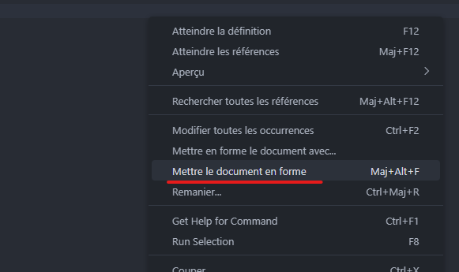

Les Guidelines
Inutile de décrire ce que fait le code : il se lit tout seul. Ce qui importe, c'est d'expliquer pourquoi un bout de code est là.
# Récupère les utilisateurs
$Users = Get-MgUser -All -Filter "endswith(mail,'@SynapsysTest.onmicrosoft.com')" -ConsistencyLevel eventual -CountVariable UserCount# endswith() est une "requête avancée" Graph : elle exige -ConsistencyLevel eventual ET -CountVariable
$Users = Get-MgUser -All -Filter "endswith(mail,'@SynapsysTest.onmicrosoft.com')" -ConsistencyLevel eventual -CountVariable UserCountUtilisez les alias et épargnez-vous la saisie des noms de paramètres dans votre terminal, mais jamais dans votre code !
Get-MgServicePrincipal -All -Filter "accountEnabled eq false" | sort DisplayName | select DisplayName, AppIdGet-MgServicePrincipal -All -Filter "accountEnabled eq false" |
Sort-Object -Property DisplayName |
Select-Object -Property DisplayName, AppIdAvec Microsoft Graph, chaque objet renvoyé transite par le réseau. Filtrez côté serveur avec -Filter et ne demandez que les propriétés utiles avec -Property, plutôt que de tout récupérer pour trier ensuite avec Where-Object.
Get-MgGroup -All | Where-Object -Property DisplayName -Like 'GRP-*'Get-MgGroup -All -Filter "startswith(displayName,'GRP-')" -Property Id, DisplayNameLe verbe doit faire partie des verbes approuvés (Get-Verb), et le nom doit être au singulier. Ajoutez un préfixe au nom pour éviter les collisions avec des commandes existantes.
function CheckAppSecrets { } # Pas de tiret, "Check" n'est pas un verbe approuvé
function Get-Secrets { } # Pluriel, et trop proche de Get-Secret (module SecretManagement)function Get-CustomAppSecret { } # Verbe approuvé, nom au singulier, préfixe "Custom"Get-Verb -Verb Check ne renvoie rien : ce verbe n'est pas approuvé. À l'import d'un module, PowerShell affiche un avertissement pour chaque fonction exportée qui utilise un verbe non approuvé.
Write-Host écrit à l'écran, pas dans le pipeline : son résultat ne peut être ni filtré, ni trié, ni exporté. Renvoyez des objets, et utilisez Write-Verbose ou Write-Information pour les messages.
foreach ($App in $Apps)
{
Write-Host "$($App.DisplayName) : $($App.PasswordCredentials.Count) secret(s)"
}foreach ($App in $Apps)
{
[PSCustomObject]@{
Application = $App.DisplayName
Secrets = $App.PasswordCredentials.Count
}
}Par convention, on utilise le PascalCase : $MaVariable. Une collection porte un nom au pluriel, l'élément de la boucle le même nom au singulier.
$r = Get-MgDirectoryRole -All
foreach ($x in $r)
{
$m = Get-MgDirectoryRoleMember -DirectoryRoleId $x.Id
}$DirectoryRoles = Get-MgDirectoryRole -All
foreach ($DirectoryRole in $DirectoryRoles)
{
$RoleMembers = Get-MgDirectoryRoleMember -DirectoryRoleId $DirectoryRole.Id
}Un script finit toujours par être partagé, copié ou versionné dans Git. Un secret d'App Registration écrit en dur est un secret compromis.
$Secret = ConvertTo-SecureString -String 'Abc8Q~xYz123...' -AsPlainText -Force
$Credential = [pscredential]::new($ClientId, $Secret)
Connect-MgGraph -TenantId $TenantId -ClientSecretCredential $Credential# Option 1 : certificat installé dans le magasin de l'utilisateur
Connect-MgGraph -TenantId $TenantId -ClientId $ClientId -CertificateThumbprint $Thumbprint
# Option 2 : secret stocké dans un coffre (module Microsoft.PowerShell.SecretManagement)
$Secret = Get-Secret -Name 'Graph-Formation'
$Credential = [pscredential]::new($ClientId, $Secret)
Connect-MgGraph -TenantId $TenantId -ClientSecretCredential $Credentialfunction Get-DeviceActivity
{
[CmdletBinding()]
param (
[ValidateRange(1, 365)]
[int]$DaysInactive = 90)
Write-Verbose "Start $($MyInvocation.MyCommand)"
$Devices = Get-MgDevice -All -Property DisplayName, OperatingSystem, ApproximateLastSignInDateTime
foreach ($Device in $Devices)
{
Write-Verbose "Processing $($Device.DisplayName)"
if ($Device.ApproximateLastSignInDateTime) {
$InactiveDays = ((Get-Date) - $Device.ApproximateLastSignInDateTime).Days }
else { $InactiveDays = $null }
[PSCustomObject]@{
DisplayName = $Device.DisplayName
OperatingSystem = $Device.OperatingSystem
InactiveDays = $InactiveDays
Stale = ($null -eq $InactiveDays) -or ($InactiveDays -ge $DaysInactive)
}
}
Write-Verbose "End $($MyInvocation.MyCommand)"
}function Get-DeviceActivity
{
[CmdletBinding()]
param (
[ValidateRange(1, 365)]
[int]$DaysInactive = 90
)
Write-Verbose "Start $($MyInvocation.MyCommand)"
$Devices = Get-MgDevice -All -Property DisplayName, OperatingSystem, ApproximateLastSignInDateTime
foreach ($Device in $Devices)
{
Write-Verbose "Processing $($Device.DisplayName)"
if ($Device.ApproximateLastSignInDateTime)
{
$InactiveDays = ((Get-Date) - $Device.ApproximateLastSignInDateTime).Days
}
else
{
$InactiveDays = $null
}
[PSCustomObject]@{
DisplayName = $Device.DisplayName
OperatingSystem = $Device.OperatingSystem
InactiveDays = $InactiveDays
Stale = ($null -eq $InactiveDays) -or ($InactiveDays -ge $DaysInactive)
}
}
Write-Verbose "End $($MyInvocation.MyCommand)"
}Dans VSCode, Clic droit > Mettre le document en forme (ou Maj+Alt+F)
